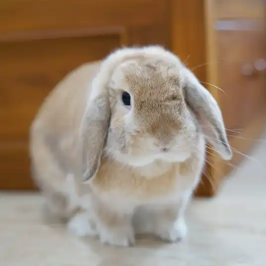

info
Netherland Dwarf
Description:The Netherland Dwarf is a breed of domestic rabbit that originated in the Netherlands. Weighing 0.50-1.13 kg the Netherland Dwarf is one of the smallest rabbit breeds. Its popularity as a pet or show rabbit may stem from its neotenic appearance. The Netherland Dwarf is recognised by both the American Rabbit Breeders Association (ARBA) and the British Rabbit Council (BRC). The Netherland Dwarf is often confused with the Polish breed of rabbit, but the latter has longer ears, a non-brachycephalic head and less cobbiness.
Appearance: The Netherland Dwarf's head and eyes are disproportionately large with respect to its short-coupled and stout ("cobby") body. Its ears are notably short and carried high on the head and its face is rounded and brachycephalic. These neotenic features, a result of dwarfism, cause the Netherland Dwarf to retain an infantile appearance even into adulthood.
Behaviour:Netherland Dwarf rabbits can be litter-trained, as they have a natural tendency to choose the same spot for their droppings, and a much higher intelligence than most rabbits, making it easier to litter train them. Netherland Dwarfs can be skittish, wild and/or of a disagreeable nature. This is a leftover stereotype from the beginnings of the breed. This has changed through selective breeding; however, they are skittish and aloof. They are extremely active and energetic, requiring the same amount of exercise as other breeds of rabbit. They also have a higher tendency towards nervousness and stress. As with any species, disposition will vary from individual to individual.
Flemish Giant

Description: The Flemish Giant rabbit is the largest breed of domestic rabbit (Oryctolagus cuniculus domesticus). Flemish Giants are historically a utility breed used for their fur and meat. They are often kept as pets as they are known for being docile and patient when being handled.
Appearance: As one of the largest breeds of domestic rabbit, the Flemish Giant is a semi-arch type rabbit with its back arch starting behind the shoulders and carrying through to the base of the tail, giving a "mandolin" shape. The body of a Flemish Giant Rabbit is long and powerful, with relatively broad hindquarters. The fur of the Flemish Giant is glossy and dense. When stroked from the hindquarters to the head, the fur will roll back to its original position. Bucks have a broad, massive head in comparison to does, and can take 1.5 years to reach full maturity. Does may have a large, full, evenly carried dewlap (the fold of skin under their chins), and can take 1 year to reach full maturity.Flemish Giant rabbits weigh 6.8 kilograms (15 lb) on average, though the largest ones can weigh up to 10 kilograms (22 lb). The longest one on record (which holds the record for the longest rabbit in the world of any kind), measured about 1.3 metres (4 ft 3 in) long.
Behaviour: Flemish Giants can be docile and tolerant of being handled if they frequently have interactions with humans.
Holland Lop
Description:Holland Lop is a breed of lop-eared rabbit that was recognized by the American Rabbit Breeders Association (ARBA) in 1979. The Holland Lop, with a maximum weight of 1.8 kg (as stipulated by ARBA), is one of the smallest lop-eared breeds.Holland Lops are one of the most popular rabbit breeds in the United States and the United Kingdom. They were first bred by Dutch breeder Adrian de Cock, as a hybrid of the French Lop and the Netherland Dwarf. Holland Lops are miniature rabbits that only weigh from about 2 to 4 pounds. They are muscular in relation to their compact frame, and have a wide variety of coat colours. Their lopped ears are one of their most distinctive features.
Appearance: According to the Holland Lop show standards, they are expected to be muscular for their short size. "Broad shoulders and deep hindquarters" are expected traits from a high quality Holland Lop, according to a judge from the Holland Lop Specialty Club. They also added that the legs should be "thick, short, and heavily boned." In shows, the body is worth a total of 32 points. The Holland Lop is typically 60 cm wide when fully stretched, as well as 60 cm tall. The Holland Lop's flesh is known to be muscular and well-toned. This is especially true when applied to high ranking show Holland Lops.They have "short, rounded noses," which differentiates them from other lop breeds, such as the mini lop.Holland Lops usually weigh between 2-4 pounds. However, according to ARBA show standards, the Holland Lop at maximum weight, is 4 pounds.
Behaviour: Holland Lops, as a breed are considered to be very calm rabbits even though they tend to come off as shy at first. As a result of this, owners can expect to spend time playing and relaxing with their Lops. In addition to exercise, Holland Lops also require toys to chew on. This is not only important for keeping them occupied, but also for avoiding potential dilemmas. If neglected, this could ensue in the destruction of personal items, or even walls, as reported by some owners.As a whole, the Holland Lop is considered to be a very friendly breed. Although there is individual variation for each rabbit, this is what is reported. Also, Male rabbits, or bucks, have been reported to be less nippy than female rabbits, although they do tend to experience a stage where they are shyer and nippy. This typically occurs when they would like to be bred. However, does are often much neater than bucks. Bucks have been known to exhibit destructive behavior, often resulting in ruined cages.
Silver Fox
Description:The Silver Fox rabbit is a rare breed of domestic rabbit developed by Walter B. Garland of North Canton, Ohio, and bred for meat, show, and its unique fur. The breed is recognized by the American Rabbit Breeders Association.
Appearance: The Silver Fox is a large, docile breed that is excellent with children. Senior bucks should weigh 9-11 pounds and senior does should weigh 10-12 pounds. The breed is named for its dense, unique fur which is to closely resembles the pelt of the silver fox. The fur of the Silver Fox rabbit is unique in that it is classified as "stand up" fur; it stands on end until stroked back into place. The Silver Fox is the only breed accepted by ARBA that has stand up fur; by ARBA standard the fur is ideally 1.5 inches (3.8 cm) in length. The Silver Fox breed is classified as "Commercial" by ARBA. This means that the ideal shape of the Silver Fox is to provide the maximum amount of meat in the prime cuts of the carcass. Well-filled, wide, straight hindquarters; a deep profile which allows for a deep loin; body width equal to the depth of the hindquarters; and a short shoulder all are ideal components of any commercial breed, including the Silver Fox. Currently, only black and chocolate Silver Foxes can be shown to win best of breed, but the breed comes in a variety of colors, such as blue, lilac, and white, which can be shown with permission from the show runners and with a working standard. Chocolate was recently accepted as an official variety as of the 2021 ARBA convention. As of December of 2021 they can be shown against black Silver Fox and win best of breed and best opposite sex. Blue was previously included in the breed standard, but was removed in the 1970s due to a decrease in the number of blue Silver Fox rabbits being shown. Currently, there is a "Certificate of Development" for blue Silver Foxes to be re-accepted into the ARBA. Blue silver fox can be shown in ARBA recognized shows for exhibition. Though rare, there are tortoise shell colored silver foxes, which are being used to recreate the now extinct breed known as the Alaskan Red Fox. It is unknown if the Alaskan Red Fox will be a proposed variety for the silver fox or a different breed entirely.
Behaviour: Silver Foxes are known to be friendly, enjoying attention and handling.
Cinnamon
Description:The Cinnamon rabbit is a breed of domesticated rabbit created "accidentally" in 1962 and named for its coat color. The Cinnamon is currently recognized by the American Rabbit Breeders Association (ARBA) but not by the British Rabbit Council (BRC).
Appearance: Named for its distinct coloration, the Cinnamon rabbit's coat is ideally rust or ground cinnamon with a uniform gray ticking across the back, smoky grey coloring on its sides, a dark underbelly, and an orange under-color all over. Rust-colored spots appear inside the hind legs and often also on the feet and face. The hind legs, feet, and face are generally darker than the rest of the body, producing a butterfly effect on the nose and small circles around each eye. The Cinnamon, weighing 8.5-11 pounds (3.9-5.0 kg), is medium in length and has a commercial body. The hips are deeper and wider than the shoulders, the head is proportionate to the body, and the ears are erect. The ARBA standard for the Cinnamon rabbit awards, of the total 100 points, 58 points for body type: ideally a good, medium-sized body with smooth bone structure and good filled in flesh. The overall coloring and coat quality is awarded 11 points, with another 11 points for desired markings and color variations, including varying shades of rust and brown on the body and belly, plus a lighter gray dusting along the back.
Behaviour: The Cinnamon is adapted and suitable to be kept as a pet, and is large enough for children, who are advised against keeping smaller breeds due to their delicate nature, but also advised against keeping giant breeds as they may be too large to handle. The Cinnamon is a hardy breed—it tends to live between 5 and 8 years—and is laidback, fairly calm, well disposed, and enjoys attention. Its coat is short and easy to care for, so weekly grooming with a slicker brush should be adequate for the majority of the year. However, biweekly grooming may be necessary during the shedding season. The Cinnamon, like any breed of rabbit, will benefit from a well-balanced diet, plenty of room to exercise, various toys to chew on, and plenty of time spent with its owner.
Belgian Hare
Description: The Belgian Hare is a "fancy" (i.e., non-utilitarian) breed of domestic rabbit that has been selectively bred to resemble the wild European hare.[1] It is a rabbit rather than a true hare. Averaging 6-9 pounds (2.7-4.1 kg), the Belgian Hare is known for its slender and wiry frame and its long and powerful legs.
Appearance: The Belgian Hare is most known for its distinctively close resemblance to a hare, with a long, fine body with muscular flank, and distinctly arched back with loins and well-rounded hind quarters. Their head is long and their tail straight and carried in line with the backbone. The fore feet of a Belgian Hare are usually long and fine-boned and perfectly straight, while their hind feet are long, fine, and flat. They are believed to be the only breed of domestic rabbit featuring a deep red, rich chestnut color of the Belgian Hare, together with black ticking of a wavy or blotchy appearance and an extended down the sides. In the USA, Rufus Red coloration is the only variety recognized. The BRC now recognizes both Black and Tan (called the Tan Hare), and Black Hares in addition to the Rufus Red.
Behaviour: The Belgian Hare is one of the most intelligent and energetic breeds of rabbit, with the potential to train rabbits to become responsive to the sound of their name. Due to their active nature and alert temperament, they can very easily be startled by sudden noise or movement. As a result of their active personality, they have been called "the poor man's racehorse". The Belgian Hare is known to be responsive to handling, particularly when trained from an early age, however, it is recommended that the Belgian Hare should not be handled by children mainly due to their large size and speed that may cause injury.
fun facts
Their teeth never stop growing
Rabbit teeth continue to grow throughout their lives, so it's important to feed them mostly grass and hay, which helps wear down the teeth to a normal size. The act of chewing on hay, plus the natural abrasive qualities of silica in grass, naturally wears the teeth to prevent them from becoming too long.
Rabbits express their happiness through 'binkies'
A fun fact about rabbits is that when they're at their most happy, they make an expression that's commonly called a binky. When a rabbit binkies, they jump up into the air and twist their head and body in opposite directions, either from standing still or running. A quick flick of the head and ears is also called a half-binky which is another sign of playfulness. A binky is your rabbit's way of telling you that they're happy with you and their life in general - so keep up the good work.
Rabbits are born with their eyes shut
Rabbits are born with their eyes shut. Once their eyes open, they have 360-degree vision meaning it's difficult to sneak up on a rabbit. They do have a small blind spot directly in front of their face.
They are very fast
Rabbits can move at speeds of around 18mph. Couple that with their ability to jump between 3-4ft high and over 9ft horizontally and it's hard to imagine ever being able to catch an escaped rabbit. Ensure that all fences are of adequate height if your rabbit is allowed to roam in the garden.
Rabbits can't vomit
Rabbits are very hygienic and self-groom in much the same way that a cat does. However, the rabbit digestive system does not move in reverse, meaning rabbits cannot bring up hairballs. They deal with the swallowed fur by eating plenty of roughage, this enables them to push it through their digestive tract.
They're natural recyclers
As part of their natural diet, rabbits eat a specific kind of their own droppings called caecotrophs. These are full of protein and vitamin B, and your rabbit eats them to maximise the nutrients they get from their food.